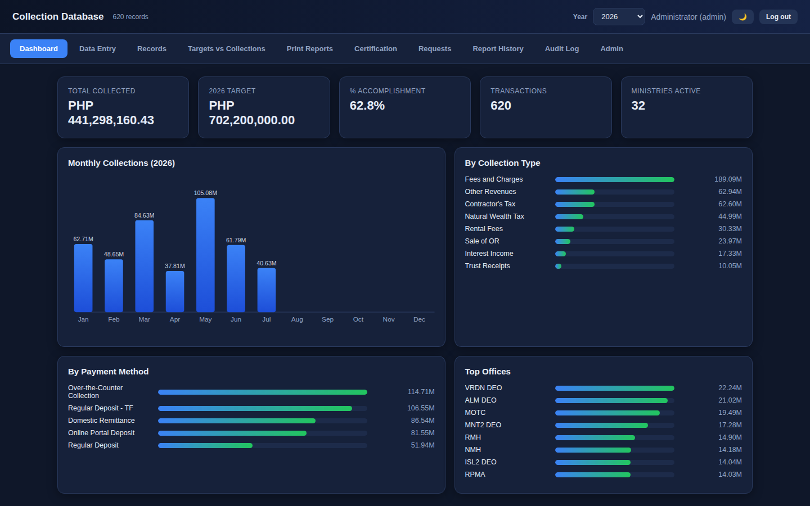
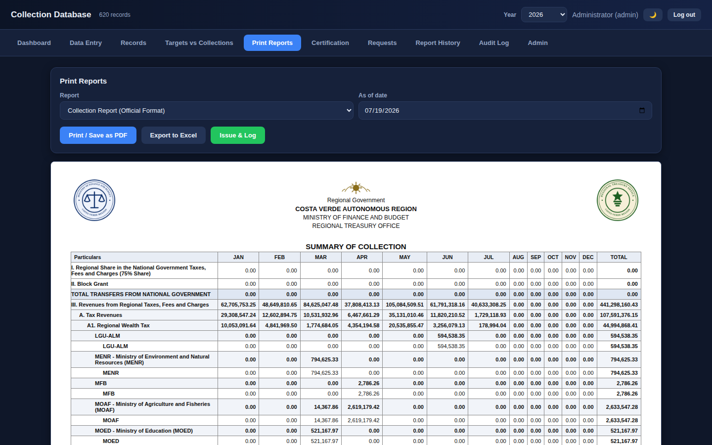
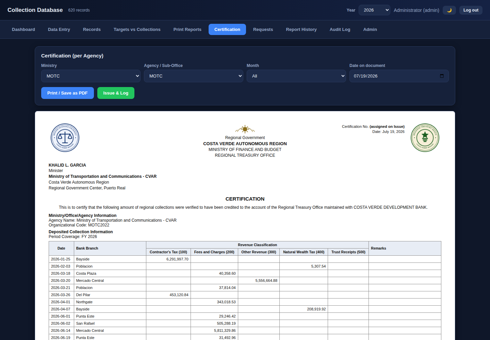

How a regional treasury office went from one breaking, share-everything spreadsheet to a self-hosted collections database with logins, audit trails, and official reports generated in seconds.
The treasury office of a regional government in the Philippines tracks collections from more than thirty ministries and agencies — hundreds of millions of pesos a year. All of it lived in one shared Google Sheets workbook. (The office's identity is withheld here; every name, agency, and figure shown is fictionalized.)
The workbook depended on Google-only formulas that silently broke in Excel. There was no record of who changed a figure, or when, or why. And every official report and certification — the documents the office exists to produce — was assembled by hand, cell by cell, every time.
For an office handling public funds, those aren't inconveniences; they're risks — accuracy risk, accountability risk, and hours of skilled staff time lost to copy-paste work. We needed one source of truth with a memory of every change, that produces official documents correctly, every time.

Before writing code: break the workbook down sheet by sheet — the master database, dashboards, ledgers, report formats, lookup lists. Understand the workflow, not just the formulas.
Every transaction and org-code mapping rebuilt, with one acid test: the new totals must match the workbook to the centavo. Repeated after every major feature. In treasury work, "close enough" doesn't exist.
Phase 1 was a single HTML file — no install, no server, works fully offline. Double-click and the whole app opens: dashboard, auto-filling data entry, records, printable reports. A zero-risk tool that earned the office's trust.
Phase 2: a Flask + SQLite web server on one office PC, used by the whole team through their browsers over the office LAN. Deliberately boring technology — the entire database is one file, trivial to back up, nothing to administer, no internet dependency.
Logins with four roles (admin, encoder, certifier, viewer) enforced server-side. An append-only audit log under the real logged-in user. Numbered, tamper-evident certifications with amount-in-words. Reports in the office's mandated official formats.
Password hashing, login lockout, no default passwords, server-side validation, formula-injection protection in Excel exports — then multiple rounds of adversarial security review, with every finding fixed and re-verified before go-live.
Live on the office's Windows PC since July 2026, with point-and-click setup and update procedures, and automatic daily backups. No IT department required — that constraint shaped the whole design.
The best post-launch features came from the staff using it daily: keyboard-first autocomplete from the data-entry officer, a new mandated report layout from a teammate. Build, verify to the centavo, review, deploy.


Time: reports that took hours of manual assembly are generated in seconds, in the exact official format, verified to the centavo against the legacy records.
Trust in the numbers: one database instead of competing spreadsheet copies. Every figure has a history — who entered it, who changed it, when. Certifications are numbered, consistent, and tamper-evident, and duty separation is real: encoding, certifying, and administering are different permissions held by different people.
Resilience: multiple staff working at once without overwriting each other, automatic daily backups, and a system running entirely on hardware the office already owned — no subscriptions, no cloud dependency, no recurring cost.
The spreadsheet asked the staff to be careful. The system makes carefulness the default.
Curious how it works? The demo runs entirely in your browser with sample data — click around the dashboard, add an entry, print a report.